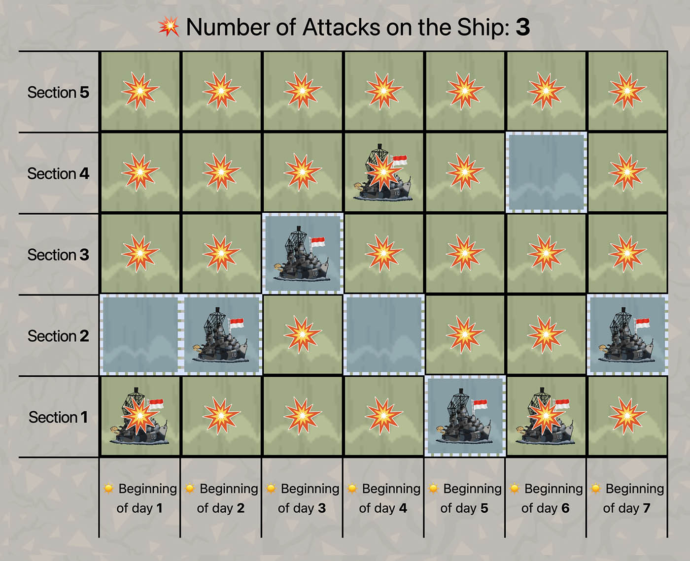

Description
Bogor is being attacked by an evil monster.
Pak Dengklek is currently in a defence ship located on the Cisadane River.
The Cisadane River is divided into $10^9$ sections numbered from $1$ to $10^9$.
At the beginning of the $1$-st day, Pak Dengklek's ship is located on the $1$-st section of the river.
At the end of each day, Pak Dengklek must do one of the two following things exactly once:
- Follow the river current to move the ship from the $x$-th section to the ($x + 1$)-th section of the river, where $x$ denotes the section number where the ship is currently located.
- Use magical technology to make the ship be located immediately on the $1$-st section of the river.
The monster will attack the river for $N$ days from the $1$-st day to the $N$-th day.
At the beginning of each day, the monster will attack all sections of the river except for one section.
Formally, for each $1 \leq i \leq N$, the $A_i$-th section of the river is the safe zone of the $i$-th day.
This means, Pak Dengklek's ship will not get attacked at the $i$-th day if and only if the ship is located on the $A_i$-th section of the river at the beginning of that day.
What is the minimum number of attacks that hit Pak Dengklek's ship if Pak Dengklek moves his ship optimally?
Constraints
- $1 \leq N \leq 200\,000$
- $1 \leq A_i \leq N$
Subtasks
-
(5 points) Contains only the following test case:
$N = 10$;
$A = [2, 1, 2, 3, 2, 3, 4, 3, 4, 5]$
- (8 points) $N \leq 8$
- (7 points) $N \leq 17$
- (7 points) $A_1 = A_2 = \ldots = A_N$
- (11 points) $A_i \leq 2$
- (21 points) $N \leq 200$
- (11 points) $N \leq 3000$
- (10 points) $A_i \leq 200$
- (20 points) No additional constraints.
Input
The input is given with the following format:
N
A1 A2 … AN
Output
Output a single line containing an integer representing the minimum number of attacks that hit Pak Dengklek's ship.
Sample Input
7
2 2 3 2 1 4 2
Sample Output
3
Explanation of Sample
One of the optimal strategies is as follows:
-
At the beginning of the $1$-st day, the ship is on the $1$-st section.
The safe zone is at the $2$-nd section, so the ship gets attacked.
Then, the ship follows the current to move to the $2$-nd section.
-
At the beginning of the $2$-nd day, the ship is on the $2$-nd section.
The safe zone is at the $2$-nd section, so the ship does not get attacked.
Then, the ship follows the current to move to the $3$-rd section.
-
At the beginning of the $3$-rd day, the ship is on the $3$-rd section.
The safe zone is at the $3$-rd section, so the ship does not get attacked.
Then, the ship follows the current to move to the $4$-th section.
-
At the beginning of the $4$-th day, the ship is on the $4$-th section.
The safe zone is at the $2$-nd section, so the ship gets attacked.
Then, the ship uses magical technology to be located immediately on the $1$-st section.
-
At the beginning of the $5$-th day, the ship is on the $1$-st section.
The safe zone is at the $1$-st section, so the ship does not get attacked.
Then, the ship uses magical technology to be located immediately on the $1$-st section.
-
At the beginning of the $6$-th day, the ship is on the $1$-st section.
The safe zone is at the $4$-th section, so the ship gets attacked.
Then, the ship follows the current to move to the $2$-nd section.
-
At the beginning of the $7$-th day, the ship is on the $2$-nd section.
The safe zone is at the $2$-nd section, so the ship does not get attacked.
Then, the ship follows the current to move to the $3$-rd section.
The following is an illustration for the strategy above.

Following this strategy, Pak Dengklek's ship will get attacked $3$ times, at the $1$-st, $4$-th, and $6$-th day.
It can be proven that there is no strategy where the ship gets attacked fewer than $3$ times.